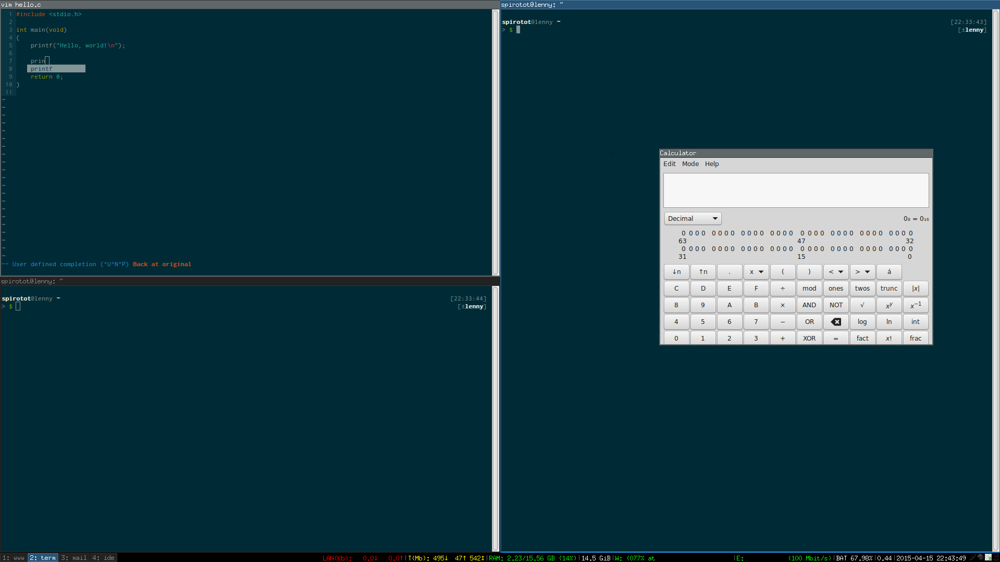

When I like something, I tend to really like it.
And, often to all involved parties' detriment and dismay, I tend to like to talk about the things that I like.
For example, if you've ever talked with me before, you've probably heard words like 'Costco', 'bikes', 'Lenovo', or 'Linux'. If you haven't talked to me before, you've heard them now. I like all of those things. People would probably prefer it if I talked about things that interest them.
Here are a few other things I like:
- Minimalistic desktops and tiling window managers.
- Keyboard shortcuts.
- Sleeping at night.
- Solarized color themes.
- The Inconsolata font.
- vim, of course.
- Code completion and syntax/error-checking, in VIM!
- Other things.
Check it out:

Look at all the space! The auto-completion! The symmetry! The colors!
I like the colors. Now you know why this blog looks like it does. It matches my desktop. I may wear plaid shorts with striped shirts, but I will match my blog with my desktop.
My dotfiles, if you're interested. Repo is a bit messy -- always a work in progress.